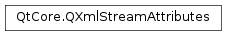

QXmlStreamAttributes¶
Synopsis¶
Functions¶
- def
__add__(l) - def
__eq__(v) - def
__iadd__(t) - def
__iadd__(t) - def
__lshift__(l) - def
__lshift__(t) - def
__lshift__(t) - def
__ne__(v) - def
append(namespaceUri, name, value) - def
append(qualifiedName, value) - def
at(i) - def
capacity() - def
clear() - def
constData() - def
constFirst() - def
constLast() - def
contains(t) - def
count() - def
count(t) - def
data() - def
empty() - def
endsWith(t) - def
fill(t[, size=-1]) - def
first() - def
front() - def
hasAttribute(namespaceUri, name) - def
hasAttribute(qualifiedName) - def
indexOf(t[, from=0]) - def
insert(i, n, t) - def
insert(i, t) - def
insert(i, t) - def
isEmpty() - def
isSharedWith(other) - def
last() - def
lastIndexOf(t[, from=-1]) - def
length() - def
mid(pos[, len=-1]) - def
move(from, to) - def
operator[](i) - def
prepend(t) - def
prepend(t) - def
push_back(t) - def
push_front(t) - def
remove(i) - def
remove(i, n) - def
removeAll(t) - def
removeAt(i) - def
removeFirst() - def
removeLast() - def
removeOne(t) - def
replace(i, t) - def
reserve(size) - def
resize(size) - def
setSharable(sharable) - def
shrink_to_fit() - def
size() - def
squeeze() - def
startsWith(t) - def
swap(other) - def
takeAt(i) - def
takeFirst() - def
takeLast() - def
value(namespaceUri, name) - def
value(qualifiedName)
Detailed Description¶
The
PySide2.QtCore.QXmlStreamAttributesclass represents a vector ofPySide2.QtCore.QXmlStreamAttribute.Attributes are returned by a
PySide2.QtCore.QXmlStreamReaderinPySide2.QtCore.QXmlStreamReader.attributes()when the reader reports astart element. The class can also be used with aPySide2.QtCore.QXmlStreamWriteras an argument toPySide2.QtCore.QXmlStreamWriter.writeAttributes().The convenience function
PySide2.QtCore.QXmlStreamAttributes.value()loops over the vector and returns an attribute value for a given namespaceUri and an attribute’s name.New attributes can be added with
PySide2.QtCore.QXmlStreamAttributes.append().
-
class
PySide2.QtCore.QXmlStreamAttributes¶ -
class
PySide2.QtCore.QXmlStreamAttributes(QXmlStreamAttributes) Parameters: QXmlStreamAttributes – PySide2.QtCore.QXmlStreamAttributesA constructor for
PySide2.QtCore.QXmlStreamAttributes.
-
PySide2.QtCore.QXmlStreamAttributes.append(qualifiedName, value)¶ Parameters: - qualifiedName – unicode
- value – unicode
This is an overloaded function.
Appends a new attribute with qualified name
qualifiedNameand valuevalue.
-
PySide2.QtCore.QXmlStreamAttributes.append(namespaceUri, name, value) Parameters: - namespaceUri – unicode
- name – unicode
- value – unicode
Appends a new attribute with
namein the namespace described withnamespaceUri, and valuevalue. ThenamespaceUrican be empty.
-
PySide2.QtCore.QXmlStreamAttributes.at(i)¶ Parameters: i – PySide2.QtCore.intReturn type: PySide2.QtCore.QXmlStreamAttribute
-
PySide2.QtCore.QXmlStreamAttributes.capacity()¶ Return type: PySide2.QtCore.int
-
PySide2.QtCore.QXmlStreamAttributes.clear()¶
-
PySide2.QtCore.QXmlStreamAttributes.constData()¶ Return type: PySide2.QtCore.QXmlStreamAttribute
-
PySide2.QtCore.QXmlStreamAttributes.constFirst()¶ Return type: PySide2.QtCore.QXmlStreamAttribute
-
PySide2.QtCore.QXmlStreamAttributes.constLast()¶ Return type: PySide2.QtCore.QXmlStreamAttribute
-
PySide2.QtCore.QXmlStreamAttributes.contains(t)¶ Parameters: t – PySide2.QtCore.QXmlStreamAttributeReturn type: PySide2.QtCore.bool
-
PySide2.QtCore.QXmlStreamAttributes.count()¶ Return type: PySide2.QtCore.int
-
PySide2.QtCore.QXmlStreamAttributes.count(t) Parameters: t – PySide2.QtCore.QXmlStreamAttributeReturn type: PySide2.QtCore.int
-
PySide2.QtCore.QXmlStreamAttributes.data()¶ Return type: PySide2.QtCore.QXmlStreamAttribute
-
PySide2.QtCore.QXmlStreamAttributes.empty()¶ Return type: PySide2.QtCore.bool
-
PySide2.QtCore.QXmlStreamAttributes.endsWith(t)¶ Parameters: t – PySide2.QtCore.QXmlStreamAttributeReturn type: PySide2.QtCore.bool
-
PySide2.QtCore.QXmlStreamAttributes.fill(t[, size=-1])¶ Parameters: - t –
PySide2.QtCore.QXmlStreamAttribute - size –
PySide2.QtCore.int
Return type: - t –
-
PySide2.QtCore.QXmlStreamAttributes.first()¶ Return type: PySide2.QtCore.QXmlStreamAttribute
-
PySide2.QtCore.QXmlStreamAttributes.front()¶ Return type: PySide2.QtCore.QXmlStreamAttribute
-
PySide2.QtCore.QXmlStreamAttributes.hasAttribute(namespaceUri, name)¶ Parameters: - namespaceUri – unicode
- name – unicode
Return type: PySide2.QtCore.boolThis is an overloaded function.
Returns
trueif thisPySide2.QtCore.QXmlStreamAttributeshas an attribute whose namespace URI and name correspond tonamespaceUriandname; otherwise returnsfalse.
-
PySide2.QtCore.QXmlStreamAttributes.hasAttribute(qualifiedName) Parameters: qualifiedName – unicode Return type: PySide2.QtCore.boolReturns
trueif thisPySide2.QtCore.QXmlStreamAttributeshas an attribute whose qualified name isqualifiedName; otherwise returnsfalse.Note that this is not namespace aware. For instance, if this
PySide2.QtCore.QXmlStreamAttributescontains an attribute whose lexical name is “xlink:href” this doesn’t tell that an attribute namedhrefin the XLink namespace is present, since thexlinkprefix can be bound to any namespace. Use the overload that takes a namespace URI and a local name as parameter, for namespace aware code.
-
PySide2.QtCore.QXmlStreamAttributes.indexOf(t[, from=0])¶ Parameters: - t –
PySide2.QtCore.QXmlStreamAttribute - from –
PySide2.QtCore.int
Return type: PySide2.QtCore.int- t –
-
PySide2.QtCore.QXmlStreamAttributes.insert(i, t)¶ Parameters: - i –
PySide2.QtCore.int - t –
PySide2.QtCore.QXmlStreamAttribute
- i –
-
PySide2.QtCore.QXmlStreamAttributes.insert(i, n, t) Parameters: - i –
PySide2.QtCore.int - n –
PySide2.QtCore.int - t –
PySide2.QtCore.QXmlStreamAttribute
- i –
-
PySide2.QtCore.QXmlStreamAttributes.insert(i, t) Parameters: - i –
PySide2.QtCore.int - t –
PySide2.QtCore.QXmlStreamAttribute
- i –
-
PySide2.QtCore.QXmlStreamAttributes.isEmpty()¶ Return type: PySide2.QtCore.bool
Parameters: other – Return type: PySide2.QtCore.bool
-
PySide2.QtCore.QXmlStreamAttributes.last()¶ Return type: PySide2.QtCore.QXmlStreamAttribute
-
PySide2.QtCore.QXmlStreamAttributes.lastIndexOf(t[, from=-1])¶ Parameters: - t –
PySide2.QtCore.QXmlStreamAttribute - from –
PySide2.QtCore.int
Return type: PySide2.QtCore.int- t –
-
PySide2.QtCore.QXmlStreamAttributes.length()¶ Return type: PySide2.QtCore.int
-
PySide2.QtCore.QXmlStreamAttributes.mid(pos[, len=-1])¶ Parameters: - pos –
PySide2.QtCore.int - len –
PySide2.QtCore.int
Return type: - pos –
-
PySide2.QtCore.QXmlStreamAttributes.move(from, to)¶ Parameters: - from –
PySide2.QtCore.int - to –
PySide2.QtCore.int
- from –
-
PySide2.QtCore.QXmlStreamAttributes.__ne__(v)¶ Parameters: v – Return type: PySide2.QtCore.bool
-
PySide2.QtCore.QXmlStreamAttributes.__add__(l)¶ Parameters: l – Return type:
-
PySide2.QtCore.QXmlStreamAttributes.__iadd__(t)¶ Parameters: t – PySide2.QtCore.QXmlStreamAttributeReturn type:
-
PySide2.QtCore.QXmlStreamAttributes.__iadd__(t) Parameters: t – PySide2.QtCore.QXmlStreamAttributeReturn type:
-
PySide2.QtCore.QXmlStreamAttributes.__lshift__(t)¶ Parameters: t – PySide2.QtCore.QXmlStreamAttributeReturn type:
-
PySide2.QtCore.QXmlStreamAttributes.__lshift__(l) Parameters: l – Return type:
-
PySide2.QtCore.QXmlStreamAttributes.__lshift__(t) Parameters: t – PySide2.QtCore.QXmlStreamAttributeReturn type:
-
PySide2.QtCore.QXmlStreamAttributes.__eq__(v)¶ Parameters: v – Return type: PySide2.QtCore.bool
-
PySide2.QtCore.QXmlStreamAttributes.operator[](i) Parameters: i – PySide2.QtCore.intReturn type: PySide2.QtCore.QXmlStreamAttribute
-
PySide2.QtCore.QXmlStreamAttributes.prepend(t)¶ Parameters: t – PySide2.QtCore.QXmlStreamAttribute
-
PySide2.QtCore.QXmlStreamAttributes.prepend(t) Parameters: t – PySide2.QtCore.QXmlStreamAttribute
-
PySide2.QtCore.QXmlStreamAttributes.push_back(t)¶ Parameters: t – PySide2.QtCore.QXmlStreamAttribute
-
PySide2.QtCore.QXmlStreamAttributes.push_front(t)¶ Parameters: t – PySide2.QtCore.QXmlStreamAttribute
-
PySide2.QtCore.QXmlStreamAttributes.remove(i, n)¶ Parameters: - i –
PySide2.QtCore.int - n –
PySide2.QtCore.int
- i –
-
PySide2.QtCore.QXmlStreamAttributes.remove(i) Parameters: i – PySide2.QtCore.int
-
PySide2.QtCore.QXmlStreamAttributes.removeAll(t)¶ Parameters: t – PySide2.QtCore.QXmlStreamAttributeReturn type: PySide2.QtCore.int
-
PySide2.QtCore.QXmlStreamAttributes.removeAt(i)¶ Parameters: i – PySide2.QtCore.int
-
PySide2.QtCore.QXmlStreamAttributes.removeFirst()¶
-
PySide2.QtCore.QXmlStreamAttributes.removeLast()¶
-
PySide2.QtCore.QXmlStreamAttributes.removeOne(t)¶ Parameters: t – PySide2.QtCore.QXmlStreamAttributeReturn type: PySide2.QtCore.bool
-
PySide2.QtCore.QXmlStreamAttributes.replace(i, t)¶ Parameters: - i –
PySide2.QtCore.int - t –
PySide2.QtCore.QXmlStreamAttribute
- i –
-
PySide2.QtCore.QXmlStreamAttributes.reserve(size)¶ Parameters: size – PySide2.QtCore.int
-
PySide2.QtCore.QXmlStreamAttributes.resize(size)¶ Parameters: size – PySide2.QtCore.int
-
PySide2.QtCore.QXmlStreamAttributes.setSharable(sharable)¶ Parameters: sharable – PySide2.QtCore.bool
-
PySide2.QtCore.QXmlStreamAttributes.shrink_to_fit()¶
-
PySide2.QtCore.QXmlStreamAttributes.size()¶ Return type: PySide2.QtCore.int
-
PySide2.QtCore.QXmlStreamAttributes.squeeze()¶
-
PySide2.QtCore.QXmlStreamAttributes.startsWith(t)¶ Parameters: t – PySide2.QtCore.QXmlStreamAttributeReturn type: PySide2.QtCore.bool
-
PySide2.QtCore.QXmlStreamAttributes.swap(other)¶ Parameters: other –
-
PySide2.QtCore.QXmlStreamAttributes.takeAt(i)¶ Parameters: i – PySide2.QtCore.intReturn type: PySide2.QtCore.QXmlStreamAttribute
-
PySide2.QtCore.QXmlStreamAttributes.takeFirst()¶ Return type: PySide2.QtCore.QXmlStreamAttribute
-
PySide2.QtCore.QXmlStreamAttributes.takeLast()¶ Return type: PySide2.QtCore.QXmlStreamAttribute
-
PySide2.QtCore.QXmlStreamAttributes.value(namespaceUri, name)¶ Parameters: - namespaceUri – unicode
- name – unicode
Return type: PySide2.QtCore.QStringRefReturns the value of the attribute
namein the namespace described withnamespaceUri, or an empty string reference if the attribute is not defined. ThenamespaceUrican be empty.
-
PySide2.QtCore.QXmlStreamAttributes.value(qualifiedName) Parameters: qualifiedName – unicode Return type: PySide2.QtCore.QStringRefThis is an overloaded function.
Returns the value of the attribute with qualified name
qualifiedName, or an empty string reference if the attribute is not defined. A qualified name is the raw name of an attribute in the XML data. It consists of the namespace prefix, followed by colon, followed by the attribute’s local name. Since the namespace prefix is not unique (the same prefix can point to different namespaces and different prefixes can point to the same namespace), you shouldn’t use qualified names, but a resolved namespaceUri and the attribute’s local name.
© 2018 The Qt Company Ltd. Documentation contributions included herein are the copyrights of their respective owners. The documentation provided herein is licensed under the terms of the GNU Free Documentation License version 1.3 as published by the Free Software Foundation. Qt and respective logos are trademarks of The Qt Company Ltd. in Finland and/or other countries worldwide. All other trademarks are property of their respective owners.